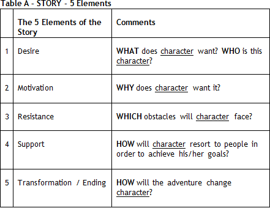

DISCLAIMER: Km 31 (Stanford) / Km 32 (HBS) / Km 33 (Wharton) guidance in assembling your first/second essay packages.
The following dialogue helps you put together your fourth package.
Even if you’re not applying to Stanford/HBS/Wharton carefully the comments made on how to assemble these three initial essay packages. Those dialogues will allow you to better enjoy the following one.
Nicholas, before we discuss their essays, we should recall that in order to build your MIT Sloan package, you must have done the Big Synthesis Exercise and reflected upon the feedback of your 3 Wise Men.
Checked, Megaron.
You’ve got it.
Observe this year’s questions proposed by MIT Sloan (see).
Cover Letter: Please submit a cover letter seeking a place in the MIT Sloan MBA Program. Your letter should conform to a standard business correspondence and be addressed to Mr. Rod Garcia, Senior Director of Admissions. (body of the letter should be 250 words or fewer)
Optional Information: The Admissions Committee invites you to share anything else you would like us to know about you, in any format. If you choose to use a multimedia format, please host the information on a website and provide us the URL.
"Please keep all videos and media limited to 2:00 minutes total in length.
Please keep all written essays to 500 words or less.
If hosting your submission on a website, please ensure you provide an unprotected link (no password required)."
Optional Information: The Admissions Committee invites you to share anything else you would like us to know about you, in any format. If you choose to use a multimedia format, please host the information on a website and provide us the URL.
"Please keep all videos and media limited to 2:00 minutes total in length. Please keep all written essays to 500 words or less. If hosting your submission on a website, please ensure you provide an unprotected link (no password required)."
It is always a challenge to sell a candidacy in only 2 essays.
Whoa, Nicholas, attention: your candidacy is not limited to “only 2 essays.”
Ok, ok, I have the recommendation letters, resume, data form, etc.
And do not forget the interviews. MIT Sloan was a pioneer in sending an AdCom member to Sao Paulo to interview Brazilian applicants. Most schools used to have alumni interview, and, unfortunately, they are not always prepared for the job.
Oh, come on, Megaron, I will cross that bridge when I come to it. I will worry about my interviews only in November and only if I am invited.
No, sir, no way. We will talk about that soon, but for now, observe the 2012-2013 interview questions that a former student disclosed.
01.) Give me ONE example of when you delegated a project effectively;
02.) Give me ONE example of when you coached someone;
03.) Give me ONE example of when you enabled someone to succeed?
04.) Give me ONE example of when you tried to accomplish something, but failed (a setback);
05.) Tell me when you had an idea and needed to let it go?
06.) Tell me a situation when you implemented something new at your current job; was it something you created or you brought from another company?
07.) Tell me about a time when you faced an obstacle at work and how you behaved.
02.) Give me ONE example of when you coached someone;
03.) Give me ONE example of when you enabled someone to succeed?
04.) Give me ONE example of when you tried to accomplish something, but failed (a setback);
05.) Tell me when you had an idea and needed to let it go?
06.) Tell me a situation when you implemented something new at your current job; was it something you created or you brought from another company?
07.) Tell me about a time when you faced an obstacle at work and how you behaved.
Wow, that is a lot to answer.
And the interview lasts only approximately 35 minutes.
Oh, my, you do have to have a well-defined SYNTHESIS in your head.
Head and Heart (MIT’ motto – see). Have you noticed that the questions for interviews are based on a Behavioral Event-Based approach?
Huh?
Oh, please, we’ve discussed this. Check MIT Sloan homepage: “The concept behind Behavioral Event Interviews (BEI) is past behavior is a reliable indicator of future response in a similar situation.”
Now I remember. And what about MIT Sloan’s concern about very concrete questions?
You’ve probably realized the way we asked questions to be answered in your essays since March (km 1).
The questions you proposed for us to explore our competences carry the same Behavioral Event-Based approach, right?
Yes, they do. Do you remember the criteria I used to evaluate your weekly texts?
I do – the 5 Elements (Table A). I saw that one of the consultants you recommended (Internet) mentions “SAR - Situation-Action-Result - Method.” What do you think of that?

We will talk about that again when you start practicing for the interviews. Others call it STAR (see).
Great. What about this Cover Letter?
Awesome.
I am on it, Megaron.
Nicholas, please keep in mind that you need to define, as early as possible, your main argument on why pursue the MBA. If you can explain Why MBA, it is easy to sell Why MIT Sloan.
Well, everyone knows the strength of his engineering school and its pragmatic/innovative character. I will go with what the Doer sells: “I need an Experiential Learning Environment.” After all, the school’s motto is exactly that one, right? Mens et Manus, Mind and Hands – analytical rigor with a pragmatic approach to problem solving.
Do your research, Nicholas. Remember “Rule 99”?
I do: “do not write in Why School something that 99% of applicants might write.”
Observe, though, that MIT Sloan, both in its interviews and in its essays, does not demand that you defend (at least directly) why you want to study there.
All right. I saw on the internet that many consultants analyze the essay questions of several b-schools. What’s your opinion on that?
The analyses on essay topics will give you an insight into HOW to answer a specific question, BUT they cannot help you answer the WHY, the inquiring element that brings SYNTHESIS to your sale. In other words, do not waste too much time analyzing the questions if you do not know what you’re selling. Having said that, I think many admissions consultants offer good analyses of essay topics. I recommend:
1. Accepted
2. Clear Admit
3. Veritas Prep
2. Clear Admit
3. Veritas Prep